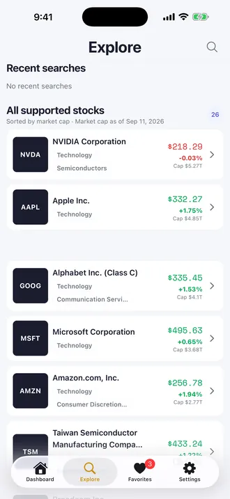
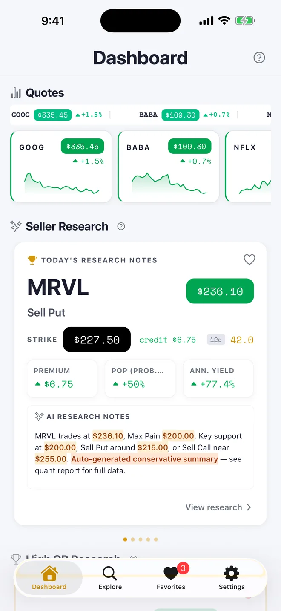

從資料出發
整理公開市場資料與新聞來源，保留可以追查的背景。


在瀏覽器開始，在手機繼續探索。
美股 · 台股 · 選擇權 · 公司新聞先選擇你關心的市場。每個產品，都有清楚的用途。
四款 Android App，加上台股與 Options 的 iOS 版本。選擇適合你的裝置。
從市場資料到公司新聞，把值得注意的線索放進同一個脈絡。
整理公開市場資料與新聞來源，保留可以追查的背景。
結合市場、個股與研究說明，幫助你比較不同觀點。
用網頁快速查看，或用 App 建立自己的日常研究習慣。
市場資料可能延遲。研究產品提供一般資訊與教育用途，沒有券商連結或下單功能。
研究內容依已發布資料更新。請以各產品顯示的資料日期與來源為準，不能視為即時成交報價。
News 著重依市場與公司整理新聞；Stocks 提供市場、個股與研究資料，適合一起使用。
從資料整理、重複性研究到內容流程，一起評估問題、輸入與輸出，再決定適合的自動化範圍。